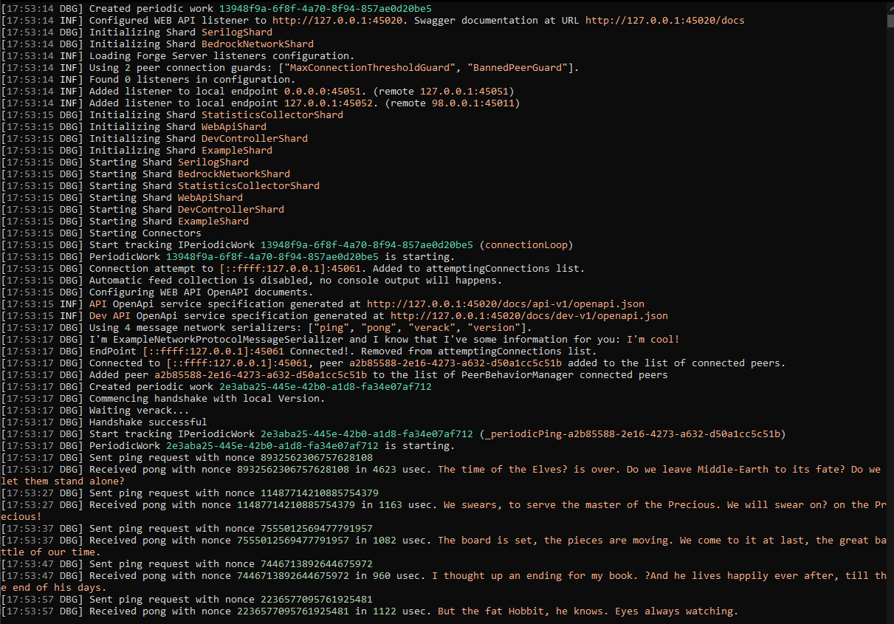
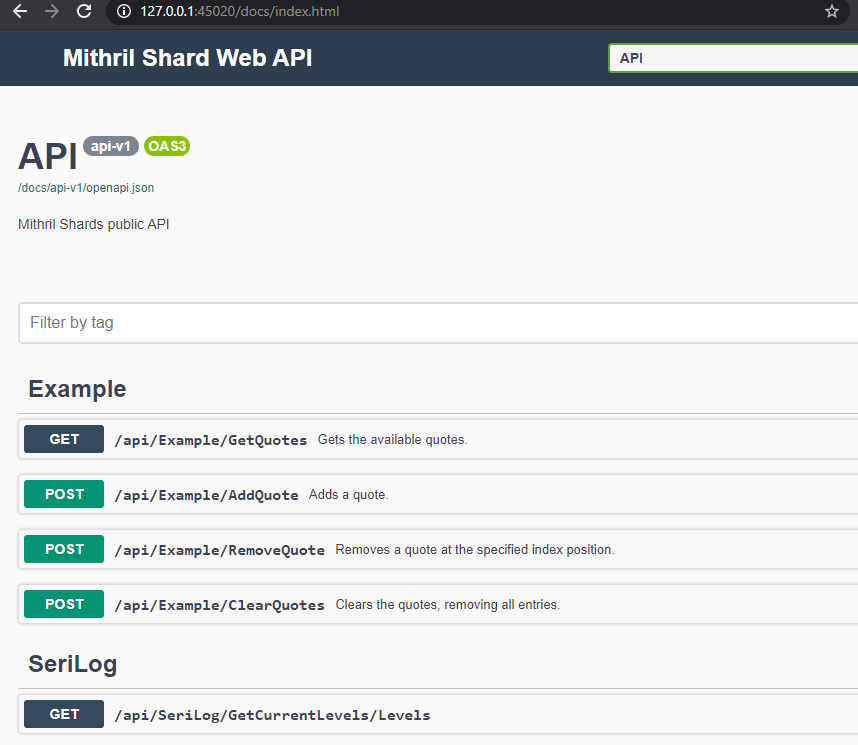
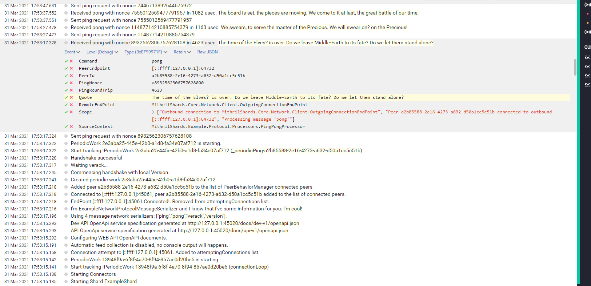

Example Projects
The best way to see it in action is by inspecting the Example projects I've created.
It's a multi-project example where each project plays its role into the modular application architecture.
Its goal is to show how to make use of Mithril Shards to implement a P2P application that implements a custom Web API controller, a custom network implementation and its own protocol with custom messages and serializators.
It reuses some other standard shards like :
- BedrockNetworkShard
- [StatisticCollectorShard]
- SerilogShard
- WebApiShard
- DevControllerShard
What it does is quite simple:
You can run two instance of this project to connect to each other and every 10 seconds a ping message will be sent to the other peer, with a random quote message.
The quote message is randomly picked by the QuoteService and quotes can be manipulated by using the ExampleController exposed by the Web API.
All the code is well commented so you shouldn't have problem understanding it, in any case the Discussions on my repository is open for you.
Example Projects
The example is composed by several projects, each one with their own scope, to mimic a (simple) typical modular application:
- MithrilShards.Example
- MithrilShards.Example.Network.Bedrock
- MithrilShards.Example.Dev
- MithrilShards.Example.Node
MithrilShards.Example
It contains the core classes and services needed to run the example application. Here we can find:
- network classes like
- a custom IPeerContext implementation and its factory class
- some custom
IServerPeerConnectionGuardimplementation to filter incoming connections and a custom ConnectorBase implementation that contains the logic to connect to other peers - protocol classes like
INetworkMessageimplementations of custom messages (payloads) and complex types used within their implementation.INetworkMessageand type serializators that serialize classes into a byte representation that can be sent through the network.INetworkMessageprocessors that contain the logic to parse incoming messages and send messages to other peers- plumbing classes like shard setting class and services used by processors or other internal components.
MithrilShards.Example.Network.Bedrock
Contains few classes that are implementing the INetworkProtocolMessageSerializer interface needed by the BedrockNetworkShard shard to perform message serialization.
In this example we are mimicking bitcoin protocol that uses a magic word (4 bytes) that mark the start of a new message and it's message layout to define the rule to decode and encode messages over the network (see ProtocolDefinition.cs file).
Note how the code is really small and how it's easy to define custom network serialization of messages. Current implementation relies on Bedrock framework shard, but if you want to create another lol level network implementation you are free to do so, you don't have to change anything else except this project to make use of your new low level network protocol, everything is abstracted out in the Mithril Shards Core project!!
MithrilShards.Example.Dev
Contains just a Controller that expose a couple of Web API actions to manipulate the QuoteService and list, add and remove quotes.
In order to show an alternative way to register controllers, this project doesn't implement a shard and doesn't have any Add* / Use* extension method to add its share, instead its controller is discovered using the ControllersSeeker property of WebApiShard in its UseApi extension method..
MithrilShards.Example.Node
It makes use of System.CommandLine to have implement the application as a CLI.
While all other projects were C# Class Library projects, this one produces an executable that's the actual, assembled application.
It contains the Program.cs file that melt the shards into the forge and run it, plus a couple of configuration files that you can inspect to see different configuration combinations.
Program.cs file is quote short and easy to read:
1 2 3 4 5 6 7 8 9 10 11 12 13 14 15 16 17 18 19 20 21 22 23 24 25 26 27 28 29 30 31 32 33 34 35 36 37 38 39 40 41 42 43 44 45 46 47 48 49 50 51 52 53 54 55 56 57 58 59 60 61 | |
Running the example
Running just an instance doesn't fully show you how the program behave, it needs at least 2 peers to connect to each other, that's why there are already multiple configuration files configured differently to let you connect two instances together.
You can run one instance by setting MithrilShards.Example.Node as the startup project and run the launchSettings profile "node1" .
Then open a shell at the MithrilShards.Example.Node project path and run the command below
1 | |
This would cause you to have a debuggable instance running with the configuration defined in forge-settings.json file and another run running on the forge-settings2.json configuration.
Alternatively you can run both instances, without a debugger (but you can attach later the process to Visual Studio) by running on two different shells:
1 2 | |
The program running forge-settings.json contains the most verbose log level and you'll have the best experience if you install (or use a docker image) of Seq configured on the port specified in your configuration file (e.g. localhost:5341).
See SerilogShard for more details.
Here an example of the configuration file (forge-settings.json)
1 2 3 4 5 6 7 8 9 10 11 12 13 14 15 16 17 18 19 20 21 22 23 24 25 26 27 28 29 30 31 32 33 34 35 36 37 38 39 40 41 42 43 44 45 46 47 48 49 50 51 52 53 54 55 56 57 58 59 60 61 62 63 64 65 | |
Some Screenshots
Here a screenshot that shows the content of the shell when running the node with settings = forge-settings.json

You can access the Swagger UI by opening the address https://127.0.0.1:45020/docs/index.html

Here you can manipulate quotes using the Web API, or even manually attempt to connect to other peers using PeerManagement Connect action in the DEV area.
If you installed Seq, you can access the logs in a better way like shown here:
